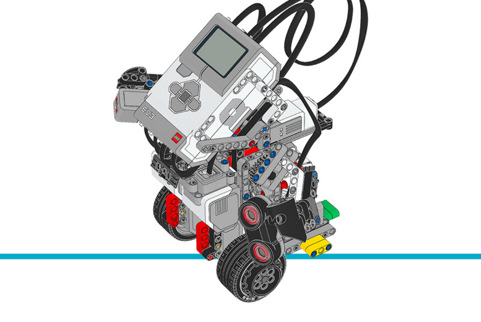

ジャイロボーイ¶
このプログラムは、ジャイロボーイが
GyroSensor を使って2つの車輪でバランスを取れるようにします。バランスを維持するために、
ジャイロの角度・ジャイロの速度・モーターの角度・モーターの速度の関数として、
モーターのデューティー比を継続的に調整します。
このプログラムは、Pythonのジェネレーター関数(returnの代わりにyieldを使う関数)を コルーチンとしても使っています。コルーチンは協調的マルチタスクの一種で、 ロボットが複数のタスクを同時に実行できるようにします。これにより、 バランスを取っている最中でもロボットを走行させることができます。
組み立て説明書
こちらからコアセットモデルの組み立て説明書をすべて確認できます。また、 このリンクからジャイロボーイの説明書に直接アクセスできます。

Figure 30 ジャイロボーイ
サンプルプログラム
#!/usr/bin/env pybricks-micropython
"""
Example LEGO® MINDSTORMS® EV3 Gyro Boy Program
----------------------------------------------
This program requires LEGO® EV3 MicroPython v2.0.
Download: https://education.lego.com/en-us/support/mindstorms-ev3/python-for-ev3
Building instructions can be found at:
https://education.lego.com/en-us/support/mindstorms-ev3/building-instructions#building-core
"""
from ucollections import namedtuple
import urandom
from pybricks.hubs import EV3Brick
from pybricks.ev3devices import Motor, UltrasonicSensor, ColorSensor, GyroSensor
from pybricks.parameters import Port, Color, ImageFile, SoundFile
from pybricks.tools import wait, StopWatch
# EV3 Brickを初期化します。
ev3 = EV3Brick()
# 駆動輪に接続されたモーターを初期化します。
left_motor = Motor(Port.D)
right_motor = Motor(Port.A)
# アームに接続されたモーターを初期化します。
arm_motor = Motor(Port.C)
# カラーセンサーを初期化します。ロボットの動きを指示する
# 色を検出するために使います。
color_sensor = ColorSensor(Port.S1)
# ジャイロセンサーを初期化します。ロボットのバランス制御の
# フィードバックに使います。
gyro_sensor = GyroSensor(Port.S2)
# 超音波センサーを初期化します。ロボットが障害物に
# 近づきすぎたことを検出するために使います。
ultrasonic_sensor = UltrasonicSensor(Port.S4)
# タイマーを初期化します。
fall_timer = StopWatch()
single_loop_timer = StopWatch()
control_loop_timer = StopWatch()
action_timer = StopWatch()
# 以下の(大文字の名前の)定数は、プログラムの動作を
# 制御します。
GYRO_CALIBRATION_LOOP_COUNT = 200
GYRO_OFFSET_FACTOR = 0.0005
TARGET_LOOP_PERIOD = 15 # ms
ARM_MOTOR_SPEED = 600 # deg/s
# Actionはロボットの走行方向を変えるために使います。
Action = namedtuple('Action ', ['drive_speed', 'steering'])
# これらは事前定義されたactionです
STOP = Action(drive_speed=0, steering=0)
FORWARD_FAST = Action(drive_speed=150, steering=0)
FORWARD_SLOW = Action(drive_speed=40, steering=0)
BACKWARD_FAST = Action(drive_speed=-75, steering=0)
BACKWARD_SLOW = Action(drive_speed=-10, steering=0)
TURN_RIGHT = Action(drive_speed=0, steering=70)
TURN_LEFT = Action(drive_speed=0, steering=-70)
# カラーセンサーが検出できる色は、ロボットが実行できる
# actionに割り当てられています。
ACTION_MAP = {
Color.RED: STOP,
Color.GREEN: FORWARD_FAST,
Color.BLUE: TURN_RIGHT,
Color.YELLOW: TURN_LEFT,
Color.WHITE: BACKWARD_FAST,
}
# この関数はカラーセンサーと超音波センサーを監視します。
#
# この関数内ではブロッキング呼び出しをしないことが重要です。
# さもないとメインプログラムの制御ループ時間に影響します。代わりに、
# 何かが起こるのを待つ間は、次のようにyieldで制御ループに
# 処理を譲ります:
#
# while not condition:
# yield
#
# また、メインの制御ループで走行速度とステアリング値を
# 更新するためにもyieldを使います:
#
# yield action
#
def update_action():
arm_motor.reset_angle(0)
action_timer.reset()
# スタンドを離れるために4秒間前進してから停止します。
yield FORWARD_SLOW
while action_timer.time() < 4000:
yield
action = STOP
yield action
# アームにあるセンサーのチェックを開始します。特定の条件が
# 検知されると、異なるactionが実行されます。
while True:
# まず、カラーセンサーをチェックします。検出した色を
# actionマップで調べます。
new_action = ACTION_MAP.get(color_sensor.color())
# 色が見つかったら、0.1秒間ビープ音を鳴らし、検出した色に応じて
# actionを変更します。
if new_action is not None:
action_timer.reset()
ev3.speaker.beep(1000, -1)
while action_timer.time() < 100:
yield
ev3.speaker.beep(0, -1)
# 新しいactionにステアリングが含まれる場合は、新しいステアリングを
# 以前の走行速度と組み合わせます。そうでなければ新しいaction全体を使います。
if new_action.steering != 0:
action = Action(drive_speed=action.drive_speed,
steering=new_action.steering)
else:
action = new_action
yield action
# 超音波センサーの測定距離が250ミリメートル未満の場合、
# ゆっくりバックします。
if ultrasonic_sensor.distance() < 250:
# アームを前後に振りながらゆっくりバックします。
yield BACKWARD_SLOW
arm_motor.run_angle(ARM_MOTOR_SPEED, 30, wait=False)
while not arm_motor.control.done():
yield
arm_motor.run_angle(ARM_MOTOR_SPEED, -60, wait=False)
while not arm_motor.control.done():
yield
arm_motor.run_angle(ARM_MOTOR_SPEED, 30, wait=False)
while not arm_motor.control.done():
yield
# ゆっくりバックしながら、ランダムに左右どちらかに
# 4秒間旋回します。
turn = urandom.choice([TURN_LEFT, TURN_RIGHT])
yield Action(drive_speed=BACKWARD_SLOW.drive_speed,
steering=turn.steering)
action_timer.reset()
while action_timer.time() < 4000:
yield
# ビープ音を鳴らし、超音波センサーが障害物を検出する前の
# actionに戻します。
action_timer.reset()
ev3.speaker.beep(1000, -1)
while action_timer.time() < 100:
yield
ev3.speaker.beep(0, -1)
yield action
# これらのセンサーを連続して読み取る必要はないので、
# 短い遅延を入れます。100ミリ秒ごとに1回読めば十分です。
action_timer.reset()
while action_timer.time() < 100:
yield
# actionの途中で転倒した場合、アームモーターが動いていたり
# スピーカーが鳴っていたりする可能性があるので、両方を止めます。
def stop_action():
ev3.speaker.beep(0, -1)
arm_motor.run_target(ARM_MOTOR_SPEED, 0)
while True:
# 眠っている目の表示と消灯で、ロボットが動きが止まるのを
# 待っていることを知らせます。
ev3.screen.load_image(ImageFile.SLEEPING)
ev3.light.off()
# センサーと変数をリセットします。
left_motor.reset_angle(0)
right_motor.reset_angle(0)
fall_timer.reset()
motor_position_sum = 0
wheel_angle = 0
motor_position_change = [0, 0, 0, 0]
drive_speed, steering = 0, 0
control_loop_count = 0
robot_body_angle = -0.25
# update_action()はジェネレーター(「return」の代わりに「yield」を
# 使う)なので、ここでは実際にはupdate_action()を実行せず、
# 後で使うための準備をするだけです。
action_task = update_action()
# ジャイロのオフセットをキャリブレーションします。測定レートが
# 毎秒2度以上変動しないことを確認して、ロボットが完全に
# 静止していることを確かめます。ジャイロドリフトにより、ロボットが
# 動いていなくてもレートがゼロにならないことがあるので、その値を後で使うために保存します。
while True:
gyro_minimum_rate, gyro_maximum_rate = 440, -440
gyro_sum = 0
for _ in range(GYRO_CALIBRATION_LOOP_COUNT):
gyro_sensor_value = gyro_sensor.speed()
gyro_sum += gyro_sensor_value
if gyro_sensor_value > gyro_maximum_rate:
gyro_maximum_rate = gyro_sensor_value
if gyro_sensor_value < gyro_minimum_rate:
gyro_minimum_rate = gyro_sensor_value
wait(5)
if gyro_maximum_rate - gyro_minimum_rate < 2:
break
gyro_offset = gyro_sum / GYRO_CALIBRATION_LOOP_COUNT
# 起きた目の表示と緑のランプで、ロボットの準備ができたことを知らせます!
ev3.speaker.play_file(SoundFile.SPEED_UP)
ev3.screen.load_image(ImageFile.AWAKE)
ev3.light.on(Color.GREEN)
# ロボットのバランスを制御するメインループです。
while True:
# このタイマーは1回のループにかかる時間を測ります。異なるactionが
# 実行されているときでもループ時間を一定に保つために
# 使います。
single_loop_timer.reset()
# 制御ループの平均周期を計算します。ランダムな変動を
# 除くために、1回分のループ時間の代わりにこの平均を
# 制御フィードバック計算に使います。
if control_loop_count == 0:
# ループの初回は、後でゼロ除算が起きないように値を
# 代入しておく必要があります。
average_control_loop_period = TARGET_LOOP_PERIOD / 1000
control_loop_timer.reset()
else:
average_control_loop_period = (control_loop_timer.time() / 1000 /
control_loop_count)
control_loop_count += 1
# ロボット本体の角度と速度を計算します
gyro_sensor_value = gyro_sensor.speed()
gyro_offset *= (1 - GYRO_OFFSET_FACTOR)
gyro_offset += GYRO_OFFSET_FACTOR * gyro_sensor_value
robot_body_rate = gyro_sensor_value - gyro_offset
robot_body_angle += robot_body_rate * average_control_loop_period
# 車輪の角度と速度を計算します
left_motor_angle = left_motor.angle()
right_motor_angle = right_motor.angle()
previous_motor_sum = motor_position_sum
motor_position_sum = left_motor_angle + right_motor_angle
change = motor_position_sum - previous_motor_sum
motor_position_change.insert(0, change)
del motor_position_change[-1]
wheel_angle += change - drive_speed * average_control_loop_period
wheel_rate = sum(motor_position_change) / 4 / average_control_loop_period
# メインの制御フィードバック計算です。
output_power = (-0.01 * drive_speed) + (0.8 * robot_body_rate +
15 * robot_body_angle +
0.08 * wheel_rate +
0.12 * wheel_angle)
if output_power > 100:
output_power = 100
if output_power < -100:
output_power = -100
# モーターを駆動します。
left_motor.dc(output_power - 0.1 * steering)
right_motor.dc(output_power + 0.1 * steering)
# ロボットが転倒したか確認します。出力速度が1秒以上
# +/-100%なら、正しくバランスを取れていないとわかります。
if abs(output_power) < 100:
fall_timer.reset()
elif fall_timer.time() > 1000:
break
# 次の「yield」文までupdate_action()を実行します。
action = next(action_task)
if action is not None:
drive_speed, steering = action
# ループ時間が少なくともTARGET_LOOP_PERIODになるようにします。
# 上の出力パワー計算は、各ループに一定の時間が
# あることを前提にしています。
wait(TARGET_LOOP_PERIOD - single_loop_timer.time())
# 転倒の処理です。ここに到達したということは、
# ロボットが転倒したということです。
# すべてのモーターを止めます。
stop_action()
left_motor.stop()
right_motor.stop()
# 気絶した目の表示と赤いランプで、ロボットがバランスを
# 失ったことを知らせます。
ev3.light.on(Color.RED)
ev3.screen.load_image(ImageFile.KNOCKED_OUT)
ev3.speaker.play_file(SoundFile.SPEED_DOWN)
# 再びバランスを試みる前に数秒待ちます。
wait(3000)